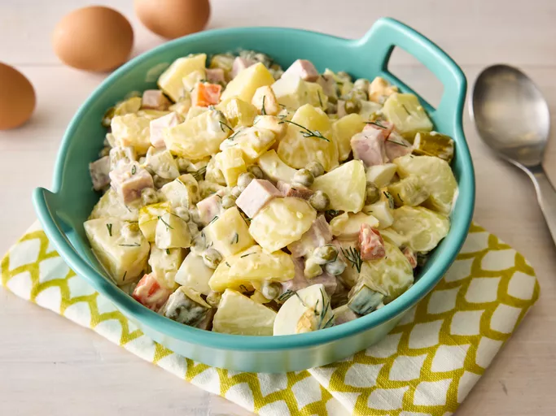

Olivier salad

Description
Olivier salad is a traditional salad dish of Russian cuisine. Its creation is generally attributed to Lucien Olivier. It is popular in the post-Soviet states and around the world.
Prep Time: 30 mins
Cook Time: 20 mins
Total Time: 50 mins
Servings: 10
Ingredients
- 6 potatoes, peeled
- 1 carrot, or more to taste
- 4 whole eggs
- 6 large pickles, cut into cubes
- 1 (15 ounce) can peas, drained
- ½ cup cubed fully cooked ham, or to taste
- 1 tablespoon chopped fresh dill, or to taste (optional)
- ½ cup mayonnaise, or to taste
Steps
- Bring a large pot of water to a boil. Add potatoes, bring to a boil, and cook for 5 to 10 minutes. Add carrots and whole eggs and continue boiling until potatoes are tender, 10 to 15 minutes.
- Drain and slightly cool mixture. Chop potatoes and carrot. Peel and chop eggs.
- Mix potatoes, carrot, eggs, pickles, peas, ham, and dill together in a large bowl. Stir in mayonnaise until salad is evenly coated.